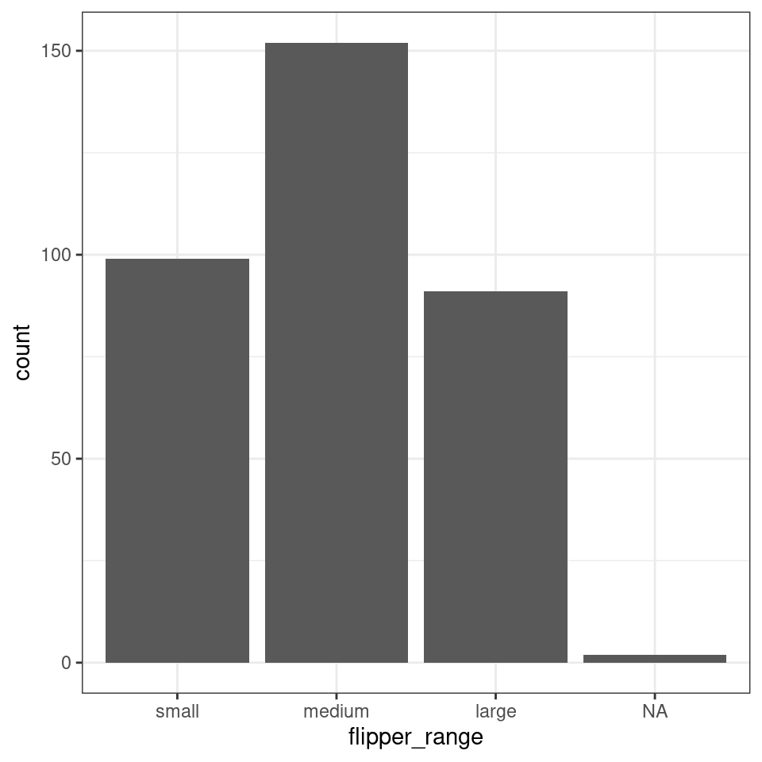

Chapter 15 Data wrangling part two
15.1 Load your workspace
You should have a workspace ready to work with the Palmer penguins data. Load this workspace now.
Think about some basic checks before you start your work today.
15.1.1 Checklist
Restart your R session and check the environment clears
Re-run your script from last time from line 1 to the last line
Check for any warning or error messages
Add the code from today's session to your script as we go
15.2 More summary tools
Very often we want to make calculations aobut groups of observations, such as the mean or median. We are often interested in comparing responses among groups. For example, we previously found the number of distinct penguins in our entire dataset.
Add these new lines of code to your script as you try them. Comment out # and add short descriptions of what you are achieving with them
Now consider when the groups are subsets of observations, as when we find out the number of penguins in each species and sex.
As we progress, not only are we learning how to use our data wrangling tools. We are also gaining insights into our data.
Question How many female Adelie penguins are in our dataset?
Question How many Gentoo penguins did not have their sex recorded?
We are using summarise and group_by a lot! They are very powerful functions:
group_byadds grouping information into a data object, so that subsequent calculations happen on a group-specific basis.summariseis a data aggregation function thart calculates summaries of one or more variables, and it will do this separately for any groups defined bygroup_by
15.2.1 summarise()
summarise() has a whole list of useful functions for producing descriptive statistics
| verb | action |
|---|---|
| mean(), median() | Center data |
| sd(), IQR() | Spread of data |
| min(), max(), quantile() | Range of data |
| first(), last(), nth() | Position |
| n(), n_distinct() | Count |
minandmaxto calculate minimum and maximum values of a numeric vectormeanandmedianto calculate averages of a numeric vectorsdandvarcalculate standard deviation and variance of a numeric vector
Using summarise we can calculate the mean flipper and bill lengths of our penguins:
penguins |>
summarise(
mean_flipper_length = mean(flipper_length_mm, na.rm=TRUE),
mean_culmen_length = mean(culmen_length_mm, na.rm=TRUE))
Note - we provide informative names for ourselves on the left side of
the =
When performing calculations in summarise it is important to set
na.rm = TRUE, this removes missing values from the
calculation
What happens when you try to produce calculations that include
NA? e.g NA + 4 or NA * 5
We can use several functions in summarise. Which means we can string several calculations together in a single step, and generate more insights into our data.
penguins |>
summarise(n=n(), # number of rows of data
num_penguins = n_distinct(individual_id), # number of unique individuals
mean_flipper_length = mean(flipper_length_mm, na.rm=TRUE), # mean flipper length
prop_female = sum(sex == "FEMALE", na.rm=TRUE) / n()) # proportion of observations that are coded as female15.2.1.1 Summarize across columns
across has two arguments, .cols and .fns.
The
.colsargument lets you select the columns you wish to apply functions toThe
.fnsargument applies the required function to all of the selected columns.
# Across ----
# The mean of ALL numeric columns in the data, where(is.numeric == TRUE) hunts for numeric columns
penguins |>
summarise(across(.cols = where(is.numeric),
.fns = ~ mean(., na.rm=TRUE)))The above example calculates the means of any & all numeric variables in the dataset.
The below example is a slightly complicated way of running the n_distinct for summarise. The .cols() looks for any column that contains the word "penguin" and then runs the n_distinct()command on these
15.2.2 group_by revisited
The group_by function provides the ability to separate our summary functions according to any subgroups we wish to make. The real magic happens when we pair this with summarise and mutate.
In this example, by grouping on the individual penguin ids, then summarising by n - we can see how many times each penguin was monitored in the course of this study.
Remember the actions of group_by are “invisible”.
Subsequent functions are applied in a “grouped by” manner - but the
dataframe itself looks unchanged.
15.2.2.1 More than one grouping variable
What if we need to calculate by more than one variable at a time? No problem we can submit several arguments:
We can then calculate the mean flipper length of penguins in each of the six combinations
Now the first row of our summary table shows us the mean flipper length (in mm) for female Adelie penguins. There are eight rows in total, six unique combinations and two rows where the sex of the penguins was not recorded(NA)
15.2.2.2 using group_by with mutate
So far we have only used group_by with the summarise function, but this doesn't always have to be the case.
When mutate is used with group_by, the calculations occur by 'group'. Here's an example:
# Using mutate and group_by ----
centered_penguins <- penguins |>
group_by(sex, species) |>
mutate(flipper_centered = flipper_length_mm-mean(flipper_length_mm, na.rm=TRUE))
centered_penguins |>
select(flipper_centered)
# Each row now returns a value for EACH penguin of how much greater/lesser than the group average (sex and species) its flipper is. Here we are calculating a group centered mean, this new variable contains the difference between each observation and the mean of whichever group that observation is in.
15.2.2.3 remove group_by
On occasion we may need to remove the grouping information from a dataset. This is often required when we string pipes together, when we need to work using a grouping structure, then revert back to the whole dataset again
Look at our grouped dataframe, and we can see the information on groups is at the top of the data:
# A tibble: 344 x 10
# Groups: sex, species [8]
species island culmen_length_mm culmen_depth_mm flipper_length_~ body_mass_g
<chr> <chr> <dbl> <dbl> <dbl> <dbl>
1 Adelie Torge~ 39.1 18.7 181 3750
2 Adelie Torge~ 39.5 17.4 186 3800
3 Adelie Torge~ 40.3 18 195 3250# Run this command will remove the groups - but this is only saved if assigned BACK to an object
centered_penguins <- centered_penguins |>
ungroup()
centered_penguinsLook at this output - you can see the information on groups has now been removed from the data.
15.3 Working with character strings
Datasets often contain words, and we call these words "(character) strings".
Often these aren't quite how we want them to be, but we can manipulate these as much as we like. Functions in the package stringr, are fantastic. And the number of different types of manipulations are endless!
15.3.1 More stringr
penguins %>%
mutate(species=str_remove_all(species, "e"))
# remove every character "e" from selected variablesWe can also trim leading or trailing empty spaces with str_trim. These are often problematic and difficult to spot e.g.
We can easily imagine a scenario where data is manually input, and trailing or leading spaces are left in. These are difficult to spot by eye - but problematic because as far as R is concerned these are different values. We can use the function distinct to return the names of all the different levels it can find in this dataframe.
If we pipe the data throught the str_trim function to remove any gaps, then pipe this on to distinct again - by removing the whitespace, R now recognises just one level to this data.
A quick example of how to extract partial strings according to a pattern is to use str_detect. Combined with filter it is possible to subset a dataframe by searching for all the strings that match provided information, such as all the penguin IDs that start with "N1"
15.3.2 separate
Sometimes a string might contain two pieces of information in one. This does not confirm to our tidy data principles. But we can easily separate the information with separate() from the tidyr package.
First we produce some made-up data
| label |
|---|
| a-1 |
| a-2 |
| a-3 |
df %>%
separate(label, # name of variable
c("treatment", "replicate"), # new column names
sep="-") # the character to mark where the separation occurs| treatment | replicate |
|---|---|
| a | 1 |
| a | 2 |
| a | 3 |
We started with one variable called label and then split it into two variables, treatment and replicate, with the split made where - occurs.
The opposite of this function is unite()
15.4 Working with dates
Working with dates can be tricky, treating date as strictly numeric is problematic, it won't account for number of days in months or number of months in a year.
Additionally there's a lot of different ways to write the same date:
13-10-2019
10-13-2019
13-10-19
13th Oct 2019
2019-10-13
This variability makes it difficult to tell our software how to read the information, luckily we can use the functions in the lubridate package.
If you get a warning that some dates could not be parsed, then you might find the date has been inconsistently entered into the dataset.
Pay attention to warning and error messages
Depending on how we interpret the date ordering in a file, we can use ymd(), ydm(), mdy(), dmy()
- Question What is the appropriate function from the above to use on the
date_eggvariable?
Here we use the mutate function from dplyr to create a new variable called date_egg_proper based on the output of converting the characters in date_egg to date format. The original variable is left intact, if we had specified the "new" variable was also called date_egg then it would have overwritten the original variable.
Once we have established our date data, we are able to perform calculations. Such as the date range across which our data was collected.
15.4.0.1 Calculations with dates
How many times was each penguin measured, and across what total time period?
penguins |>
group_by(individual_id) |>
summarise(first_observation=min(date_egg_proper),
last_observation=max(date_egg_proper),
study_duration = last_observation-first_observation,
n=n())Cool we can also convert intervals such as days into weeks, months or years with dweeks(1), dmonths(1), dyears(1).
As with all cool functions, you should check out the RStudio cheat sheet for more information. Date type data is common in datasets, and learning to work with it is a useful skill.
15.5 Factors
In R, factors are a class of data that allow for ordered categories with a fixed set of acceptable values.
Typically, you would convert a column from character or numeric class to a factor if you want to set an intrinsic order to the values (“levels”) so they can be displayed non-alphabetically in plots and tables, or for use in linear model analyses (more on this later).
Another common use of factors is to standardise the legends of plots so they do not fluctuate if certain values are temporarily absent from the data.
penguins <- penguins |>
mutate(flipper_range = case_when(flipper_length_mm <= 190 ~ "small",
flipper_length_mm >190 & flipper_length_mm < 213 ~ "medium",
flipper_length_mm >= 213 ~ "large"))If we make a barplot, the order of the values on the x axis will typically be in alphabetical order for any character data

To convert a character or numeric column to class factor, you can use any function from the forcats package. They will convert to class factor and then also perform or allow certain ordering of the levels - for example using forcats::fct_relevel() lets you manually specify the level order.
The function as_factor() simply converts the class without any further capabilities.
The base R function factor() converts a column to factor and allows you to manually specify the order of the levels, as a character vector to its levels = argument.
Below we use mutate() and fct_relevel() to convert the column flipper_range from class character to class factor.
## [1] "large" "medium" "small"Now when we call a plot, we can see that the x axis categories match the intrinsic order we have specified with our factor levels.

Factors will also be important when we build linear models a bit
later. The reference or intercept for a categorical predictor variable
when it is read as a <chr> is set by R as the first
one when ordered alphabetically. This may not always be the most
appropriate choice, and by changing this to an ordered
<fct> we can manually set the intercept.
15.6 Finished
Make sure you have saved your script 💾 and given it the filename "01_import_penguins_data.R" in the "scripts" folder.
Does your workspace look like the below?

Figure 15.1: My neat project layout

Figure 15.2: My scripts and file subdirectory
15.7 Activity: Test yourself
Question 1. In order to subset a data by rows I should use the function
Question 2. In order to subset a data by columns I should use the function
Question 3. In order to make a new column I should use the function
Question 4. Which operator should I use to send the output from line of code into the next line?
Question 5. What will be the outcome of the following line of code?
Unless the output of a series of functions is "assigned" to an object using <- it will not be saved, the results will be immediately printed. This code would have to be modified to the below in order to create a new filtered object penguins_filtered
Question 5. What is the main point of a data "pipe"?
Question 6. The naming convention outputted by the function `janitor::clean_names() is
Question 7. Which package provides useful functions for manipulating character strings?
Question 8. Which package provides useful functions for manipulating dates?
Question 9. If we do not specify a character variable as a factor, then ordering will default to what?